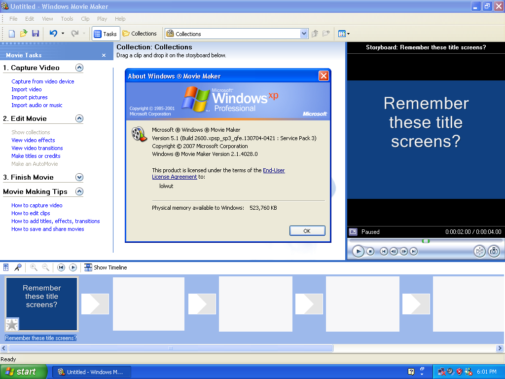

The Internet is Serious Business!
Home > Computers, Technology, and Internet > Microsoft > Windows XP > Windows Movie Maker
Note that I am referring specifically to the version of Windows Movie Maker included with the Windows XP desktop computer that I used from 2004 to 2010. Although I do not know the exact version number, it was most likely some variant of version 2.1; the copy of the program in my Windows XP virtual machine, which, as far as I can tell, is indistinguishable from the version I'm referring to, is listed as version 2.1.4028.0 and looks like this:

Compared to some of the other parts of Windows XP, I started using Movie Maker relatively late. I had very little reason to edit and produce my own videos prior to registering my first account on YouTube in March 2007; even then, it would be months until I encountered the need to put together my first video using the program. I was able, however, to become proficient with Movie Maker with little difficulty, and for the rest of the late 2000s I used it to edit every video I made. It was the first video editor I spent any significant amount of time using, and because it was free and already installed on my computer, for many years it was the only one I ever bothered to use.
This is not to say that I always felt satisfied with Movie Maker. I was well aware back then that it was a rather basic editor, with somewhat limited functionality; there were plenty of other, far more powerful video editors that existed, like the Sony Vegas line, the users of which I often looked upon with some envy. Admittedly, program crashes while editing were also not uncommon—on one occasion, while I was editing a particular video with Movie Maker, it crashed a total of four times during the process—though I don't believe I ever lost any significant amount of data to them, as the program also has a very useful auto-save feature which permits recovery of unsaved files after a crash.
My favorite memories concerning Windows Movie Maker, though, are not those of me actually using the program to edit videos, but rather watching the great number of videos on YouTube that were edited with this version of Movie Maker and then uploaded to the site by other people. During the 2000s (and even a bit into the early 2010s) it seemed like every other video on the site had been edited with the Windows XP version of Windows Movie Maker, which is not surprising, as the program was included with XP, and XP dominated the PC OS market for most of the 2000s. There was a comfortable familiarity whenever I began watching a new video on YouTube and again saw the characteristic title screens, particularly the default style, which has a white sans-serif font over a blue background; the distinctive video effects and transitions which were included with the program, such as the Hue, Cycles Entire Color Spectrum
effect, the Threshold
effect, the Shatter, In
transition, and the Bars
transition; and the title animations that were undoubtedly of Movie Maker origin, like the Ticker Tape
, Wow!
, Paint Drip
, Moving Titles, Layered
, and Credits: Video Left
animations.
Back in those days, Windows Movie Maker saw widespread use on the site, so much so that you could say that it was considered the standard video-editing software for YouTube videos: the large majority of channels, if they uploaded videos that required at least some degree of editing, used this version of Movie Maker to perform that editing; it was only the larger and more professional channels on the site (which were quite few in number) that almost never used Movie Maker to produce their videos. This resulted in a state of affairs in which Windows Movie Maker tended to be the video editor of choice for the average, everyday folks on the site, and hence became associated somewhat with amateurism. Though some may think this is a bad thing, I find a special charm to those YouTube videos of the 2000s which were edited with Movie Maker—watching them feels very much like watching a little video a friend put together and shared with you, rather than consuming some sleek and polished, but also impersonal, video product that was assembled by some distant individual.
I also feel compelled to mention that the YouTube Poop community, in its early years, often used Movie Maker to make their videos. The first few YouTube Poops I made myself were also put together in this version of Movie Maker, though they are not very entertaining or funny, partly because I am rather uncreative, and partly because of Movie Maker's limitations—I much admire the man who is able to produce high-quality YouTube Poops using nothing more than Movie Maker as his video editor.
When in September/October 2009 I upgraded to Windows 7, I searched for a pre-installed version of Movie Maker on my computer. I found an updated version of the program included with Windows 7, which was named Windows Live Movie Maker, but, upon starting it up and using it a bit, I recall being quickly disappointed after discovering that more features had been removed than added, and that the newer version was actually less powerful than the older version I had used on XP. Afterwards I downloaded and installed the older version, and even today, I much prefer the Windows XP version to any of the newer versions.


 All written materials on this Web site are my own, and all are released under the Do What the Fuck You Want to Public License Version 2.
All written materials on this Web site are my own, and all are released under the Do What the Fuck You Want to Public License Version 2.
This page last modified on 26 March 2021.
{kind=link}
{kind=link}
{kind=link}
{kind=link}
{kind=link}
{kind=link}
{kind=link}
{kind=link}
{kind=link}
{kind=link}